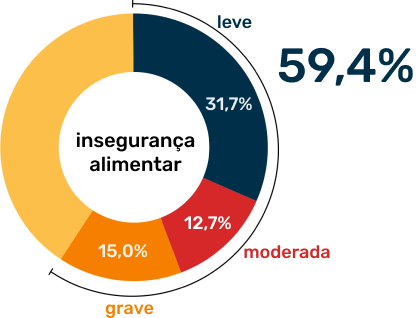
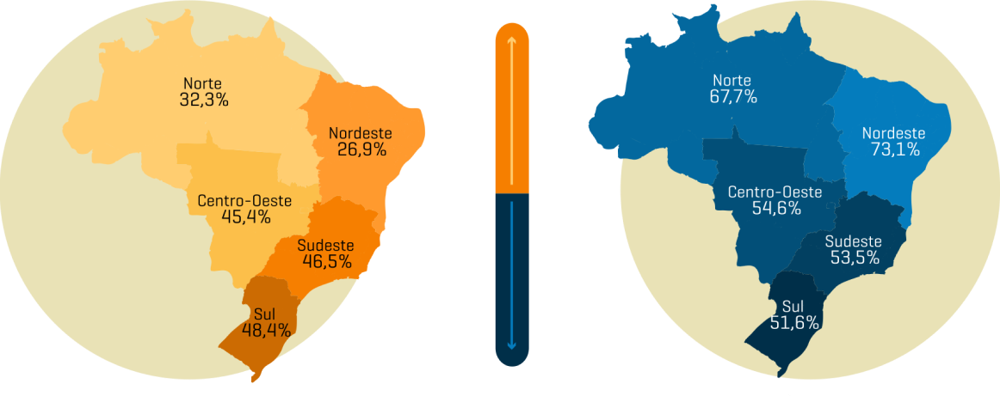

Efeitos da pandemia na alimentação e na situação da segurança alimentar
A Organização das Nações Unidas (ONU) estimou que mais de 130 milhões de pessoas em todo mundo poderiam estar em situação de insegurança alimentar até o final de 2020. Estes dados integram relatório divulgado em junho de 2020 que analisou os potenciais impactos da pandemia da Covid-19 na segurança alimentar mundial.
Os dados divulgados pela ONU convergiam com a denúncia de muitos movimentos sociais e organizações da sociedade civil sobre a situação da segurança alimentar no Brasil nos primeiros meses da pandemia: as difi culdades de acesso aos alimentos ameaçavam a segurança alimentar de muitos domicílios brasileiros.
Há uma alta frequência de insegurança alimentar nos domicílios no período de pandemia. A segurança alimentar é de 40,6%
Os marcadores de desiguadade de gênero, raça ou cor, renda, contextos regionais, territoriais e determinadas características domiciliares tornaram alguns domicílios mais suscetiveis à insegurança alimentar.
Segurança alimentar no Brasil
Antes mesmo da pandemia de Covid-19 já se verificava uma tendência no Brasil de diminuição da segurança alimentar. O aumento dos níveis de insegurança alimentar foi influenciado pela combinação dos efeitos das crises econômica e política.As desigualdades quanto às situações de segurança alimentar são reforçadas quando analisamos as cinco macrorregiões brasileiras. É possível atestar, as seguintes proporções de segurança alimentar nos domicílios situados nas cinco grandes regiões do Brasil: Sul 48,4%, Sudeste 46,5%, Centro-oeste 45,4%, Norte 32,3% e Nordeste 26,9%. Isso significa que enquanto as regiões Nordeste e Norte apresentam proporções de segurança alimentar inferior ao percentual nacional (40,6%), as regiões Sul, Sudeste e Centro-Oeste têm taxa de segurança alimentar superior.
Segurança alimentar e desigualdades regionais
Segurança alimentar no Maranhão
O Maranhão é o estado que tem o maior percentual de domicílios em situação de insegurança alimentar do país, segundo a Pesquisa de Orçamentos Familiares Contínua (POF) do Instituto Brasileiro de Geografia e Estatística (IBGE) realizada em 2017 - 2018. Ao todo, 62,2% dos lares maranhenses apresentavam situação de insegurança alimentar. O percentual representa mais de 1,3 milhões de residências.
No Maranhão, 84% dos moradores em domicílios em situação de insegurança alimentar possuíam até um salário mínimo domiciliar per capita. A situação de insegurança alimentar é maior nos domicílios da zona rural do Maranhão, acusando maior proporção de moradores em domicílios em insegurança alimentar leve (39,2%) e moderada (17,9%).
37,8% dos moradores em segurança alimentar e 35,5% em insegurança alimentar no Maranhão encontram-se nas classes de rendimento de meio a um salário mínimo.
No Maranhão, os pardos representam 69,6% dos moradores em domicílios em insegurança alimentar.
Atuação do estado do Maranhão no combate à insegurança alimentar
O Governo do Maranhão vem atuando no fortalecimento da política de segurança alimentar e nutricional do estado por meio de várias frentes, como: assessoramento e mobilização dos municípios para a implantação do Sistema Nacional de Segurança Alimentar e Nutricional (Sisan) e elaboração de Planos Municipais de Segurança Alimentar e Nutricional (SAN); implantação, expansão e reestruturação de equipamentos de SAN; articulação de ações intersetoriais e o estabelecimento de parcerias nas esferas públicas e privadas para execução das ações de SAN; e potencialização de ações de SAN já existentes, mediante o assessoramento e capacitação de gestores, técnicos e agentes sociais de SAN; celebração de convênios e contratos; monitoramento das ações da Política de SAN nos municípios; acompanhamento e avaliação do estado nutricional do público atendido nos equipamentos de SAN; e a articulação junto a outros setores públicos e privados para promoção da alimentação saudável.
Durante a pandemia da Covid 19, as ações de enfrentamento à fome se intensificaram no Maranhão levando ao reforço dos programas já existentes e implementação de novos

O estado nutricional adequado (eutrofia) de crianças no Maranhão é o terceiro maior dentre as nove UFs do Nordeste, no ano de 2020, com 57,7%. O Maranhão foi o estado do Brasil com o maior percentual de adolescentes eutróficos em 2020, com 71,5% nessa condição. Em relação ao sobrepeso e obesidade nessa fase, o Maranhão foi o estado com os menores percentuais (16,9% e 6,7%, respectivamente). Já em adultos e idosos, o percentual de sobrepeso é preocupante, chegando a aproximadamente 36,2% e 39,6%, respectivamente.
Programa Comida na Mesa
Conjunto de ações do governo durante a pandemia para geração de renda e garantia do acesso à alimentação.
Restaurante Popular
Os restaurantes populares facilitam o acesso à alimentação de qualidade do seu preço baixo.
Restaurante da Educação
Restaurante popular voltado para servidores e estudantes da eduação básica das redes Estadual e Federal e do ensino superior em instituições localizadas na Unidade Regional de Educação de São Luís.
Cozinha Comunitária
As cozinhas comunitárias visam oferecer refeições gratuitas para os maranhenses em situação de risco.

Programa Vale Gás
Forma de combater o aumento da fome ao atender mais de 119 mil famílias com gás de cozinha.
Banco de Alimentos
Tem o objetivo de mitigar o desperfício e proporcionar alimentação de qualidade para quem precisa, garantindo a segurança alimentar das famílias no Maranhão.
PAA Leite
Consiste na aquisição de leite de vaca e de cabra, oriundos da produção idependente de agricultores familiares, que atendam aos requisitos de controle de qualidade.
Capacitação dos Municípios
Capacitação para adesão ao Sisan, além do Selo Sisan “Mais Segurança Alimentar”.
Plano de ações de Boas Práticas
Conjunto de medidas para evitar avanço do coronavirús e para proporcionar melhoria sanitária de instalações.

Programa Mais Feiras
Tem o objetivo de proporcionar ao agricultor familiar um espaço de comercialização dos seus produtos.